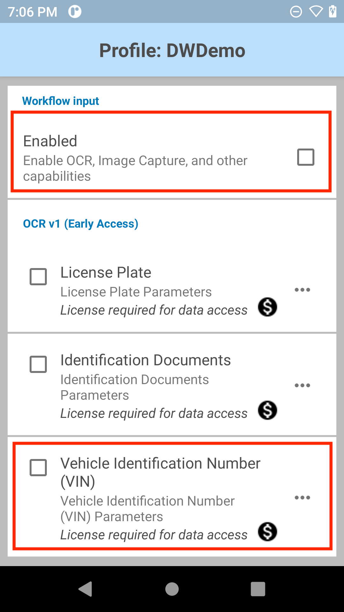
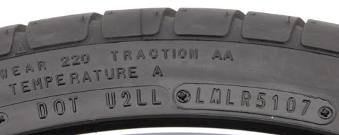

Overview
Workflow Input provides options to capture data when executing advanced tasks from a workflow process. This includes capturing text from digital images, or decoding the barcode from a captured image with the built-in imager.
Workflow Input consists of:
- OCR - Mobility DNA OCR Wedge allows for the automatic recognition and capture of text in specific use cases and its conversion into digital data for delivery to any application. The specific use cases are: license plates, vehicle identification numbers (VIN), tire identification numbers (TIN), shipping container IDs, utility meters and identification documents, where OCR can extract specific information from drivers licenses and identification cards.
- Image Capture - capture images with the aid of colored highlights to ensure the appropriate image is captured. There are two types of image capture: Free-Form Image Capture or Document Capture.
Use SetConfig to programmatically configure Workflow Input parameters in the DataWedge profile.
To capture data and images from Workflow Input (OCR or image capture) into your app, see Workflow Input Programmer's Guide.
Note: License required message appears after device reboot or factory reset. If any Workflow Input options are toggled or accessed via the DataWedge UI after a device reboot or factory reset, a "License required" message may appear. This occurs if the Mobility DNA OCR Wedge license initialization process has not completed after the reboot or reset. This is resolved after some time elapses for the license initialization process to complete.
Requirements
- DataWedge version 11.2 or higher (find the version)
- Scanning framework 32.0.3.6 or higher (find the version)
- Zebra mobile computer on SD660 platform
- Android 11 or higher
- For Mobility DNA OCR Wedge offerings:
- Built-in camera on mobile computer
- Mobility DNA OCR Wedge license - required for each individual OCR offering:
- Mobility DNA License Plate OCR Wedge License
- Mobility DNA Identification Documents OCR Wedge License
- Mobility DNA Vehicle Identification Number OCR Wedge License
- Mobility DNA Tire Identification Number OCR Wedge License
- Mobility DNA Shipping Container ID OCR Wedge License
- Mobility DNA Meter Reading OCR Wedge License
Also see DataWedge licensing.
Note: When using DWDemo for testing or demonstration of Mobility DNA OCR Wedge, a license is not required.
OCR
Mobility DNA OCR Wedge uses machine learning to enable fine-tuned, use-case specific models to extract data in real-time via the Zebra Android device camera without the need for a data connection. Supported configurations:
| License Plates (See supported countries/states.) | ||
| Identification Documents (See supported document types by state, country, province.) | ||
| Vehicle Identification Number (VIN) | ||
| Tire Identification Number (TIN) | ||
| Shipping Container ID | ||
| Meter Reading |
Main features:
- Automatic text data capture using trained machine learning models
- Visual feedback provided to guide users during data capture
- On-device processing of data being captured
More information on each configuration follows in the sections below. To learn more, see Mobility DNA OCR Wedge.
License Plate
License Plate OCR Wedge offers automatic recognition of license plates with the following characteristics:
- Region/Country of origin: US, EU. See list of states/countries supported.
- Supported character colors: black, green, blue, red
- License plates with 1 or 2 lines of characters
- License plates with a width-height ratio of at least 1:1
- Dark text on brighter background
 |
||
| Sample license plate from US (New York) and UK |
Video demonstrating license plate scans
Performance and behavior considerations:
- Performance may be impacted by contributing factors such as reflections, sunlight, debris (e.g., dirt, snow), scratches, etc.
- Characters dash ( - ) and colon ( : ) are not supported.
License Plates Supported:
Configuration
License Plate parameters:
- Input Source - Specify the input source to capture data; set to camera by default for OCR support.
- Session Timeout - Specify the timeout period. Integer range: 0 – 60000 (increments of 500), default: 10000.
- Illumination - Turn on/off illumination during scanning.
- Output Image - Output the image captured from which the data is decoded:
- Full - Output entire image (default)
- None - Do not output image
- Region Selection - Select scan mode based on the region of the license plate; see License Plates Supported.
- EU - European License Plates
- US - US License Plates
- Feedback Parameters:
- Decode Audio Feedback - Select from the list an audio tone to play for a successful decode
- Decode Haptic Feedback - Enable/disable the device to vibrate for a successful decode
- Decoding LED Notification - When enabled, the green LED flashes to indicate a successful decode
- Beep Volume Channel - Select the volume setting to be used when playing the Decode Audio Feedback:
- Ringer - Uses Ringer volume setting for audio feedback
- Music and Media - Uses Music and Media volume setting for audio feedback
- Alarms - Uses the Alarms volume setting for audio feedback
- Notification - Uses Notification volume setting for audio feedback (default)
To configure License Plate parameters:
- In the DataWedge profile, enable Workflow Input and License Plate under OCR. Note: A Mobility DNA License Plate OCR Wedge license is required for access from a custom DataWedge profile (i.e., profile that is not DWDemo).
- Tap the menu icon next to License Plate to open the License Plate parameters.

- Select and configure the License Plate parameters as desired.
- Tap on Region Selection to select the appropriate region.
- Tap back twice to return to the License Plate parameters screen.
- Tap on Feedback Parameters.
- Set the desired Feedback Parameters.
- Optionally, use DWDemo to try this feature.
Identification Document
Identification Document OCR Wedge offers automatic recognition of different identification cards (e.g., national ID and resident cards) and driver's licenses based on region:
- Driver's Licenses: Europe, US, Canada, Australia, New Zealand
- National/Resident ID Cards: Europe, US, Mexico
See Identification Documents Supported.
See the list of individual fields that can be retrieved from the Identification Document.
 |
 |
|
| Sample driver license from US (Pennsylvania) and Norway |
Video demonstrating an identification document scan
Performance and behavior considerations:
- Performance may be impacted by contributing factors such as reflections, lighting conditions, debris (e.g., dirt, snow), abrasion, poor background contrast, etc.
- Some special characters are not supported (e.g., ñ, á, etc.).
Identification Documents Supported
Configuration
Identification Document parameters:
- Input Source - Specify the input source to capture data; set to camera by default for OCR support.
- Session Timeout - Specify the timeout period. Integer range: 0 – 60000 (increments of 500), default: 10000.
- Illumination - Turn on/off illumination during scanning.
- Output Image - Output the image captured from which the data is decoded:
- Full - Output entire image (default)
- None - Do not output image
- Feedback Parameters:
- Decode Audio Feedback - Select from the list an audio tone to play for a successful decode
- Decode Haptic Feedback - Enable/disable the device to vibrate for a successful decode
- Decoding LED Notification - When enabled, the green LED flashes to indicate a successful decode
- Beep Volume Channel - Select the volume setting to be used when playing the Decode Audio Feedback:
- Ringer - Uses Ringer volume setting for audio feedback
- Music and Media - Uses Music and Media volume setting for audio feedback
- Alarms - Uses the Alarms volume setting for audio feedback
- Notification - Uses Notification volume setting for audio feedback (default)
To configure Identification Document parameters:
- In the DataWedge profile, enable Workflow Input and Identification Documents under OCR. Note: A Mobility DNA Identification Documents OCR Wedge license is required.

- Tap the menu icon next to Identification Documents to open Identification Document parameters.

- Select and configure the Identification Document parameters as desired.
- Tap on Feedback Parameters.
- Set the desired Feedback Parameters.
- Optionally, use DWDemo to try this feature.
Vehicle Identification Number (VIN)
Vehicle identification number (VIN) Mobility DNA OCR Wedge offers automatic recognition of ISO-compliant ISO3779 VINs from automobile windshields or paper documents with the following characteristics:
- Consists of 17 characters (digits and capital letters)
- Horizontal or vertical format
 |
||
| VIN samples |
Video demonstrating a VIN scan
Performance and behavior considerations:
- Embossed and low-contrast VIN cannot be read.
- Performance may be impacted by contributing factors such as reflections, lighting conditions, debris (e.g., dirt, snow), abrasion, etc.
Configuration
Vehicle Identification Number parameters:
- Input Source - Specify the input source to capture data; set to camera by default for OCR support..
- Session Timeout - Specify the timeout period. Integer range: 0 – 60000 (increments of 500), default: 10000.
- Illumination - Turn on/off illumination during scanning.
- Output Image - Output the image captured from which the data is decoded:
- Full - Output entire image (default)
- None - Do not output image
- Feedback Parameters:
- Decode Audio Feedback - Select from the list an audio tone to play for a successful decode
- Decode Haptic Feedback - Enable/disable the device to vibrate for a successful decode
- Decoding LED Notification - When enabled, the green LED flashes to indicate a successful decode
- Beep Volume Channel - Select the volume setting to be used when playing the Decode Audio Feedback:
- Ringer - Uses Ringer volume setting for audio feedback
- Music and Media - Uses Music and Media volume setting for audio feedback
- Alarms - Uses the Alarms volume setting for audio feedback
- Notification - Uses Notification volume setting for audio feedback (default)
To configure Vehicle Identification Number parameters:
- In the DataWedge profile, enable Workflow Input and Vehicle Identification Number (VIN) under OCR. Note: A Mobility DNA Vehicle Identification Number OCR Wedge license is required. 
- Tap the menu icon next to Vehicle Identification Number (VIN) to open its parameters.

- Select and configure the VIN parameters as desired.
- Tap on Feedback Parameters.
- Set the desired Feedback Parameters.
Tire Identification Number (TIN)
Tire Identification Number (TIN) Mobility DNA OCR Wedge automatically recognizes the U.S. Department of Transportation (DOT) serial number located on the inside sidewall near the rim of the tire.
TIN OCR Mode Requirements:
| US DOT 1 | US DOT 2 | Universal | |
|---|---|---|---|
| Character Support | A, B, C, D, E, F, H, J, K, L, M, N, P, R, T, U, V, W, X, Y 0-9 |
A, B, C, D, E, F, H, J, K, L, M, N, P, R, T, U, V, W, X, Y 0-9 |
A-Z 0-9 |
| Starting Characters | Must Start with “DOT” | Must Start with “DOT” | N/A |
| String Length | Minimum: 15 characters Maximum: 16 characters |
Minimum: 11 characters Maximum: 16 characters |
Minimum: 4 characters |
| Other Requirements | Only supports tires produced after the year 2000. | Only supports tires produced after the year 2000. |
|  | ||
| TIN samples |
Video demonstrating TIN scans
Configuration
Tire Identification Number parameters:
- Input Source - Specify the input source to capture data; set to camera by default for OCR support.
- Session Timeout - Specify the timeout period. Integer range: 0 – 60000 (increments of 500), default: 10000.
- Illumination - Turn on/off illumination during scanning.
- Output Image - Output the image captured from which the data is decoded:
- Full - Output entire image (default)
- None - Do not output image
- TIN Type - Scan mode for TIN reading:
- Feedback Parameters:
- Decode Audio Feedback - Select from the list an audio tone to play for a successful decode
- Decode Haptic Feedback - Enable/disable the device to vibrate for a successful decode
- Decoding LED Notification - When enabled, the green LED flashes to indicate a successful decode
- Beep Volume Channel - Select the volume setting to be used when playing the Decode Audio Feedback:
- Ringer - Uses Ringer volume setting for audio feedback
- Music and Media - Uses Music and Media volume setting for audio feedback
- Alarms - Uses the Alarms volume setting for audio feedback
- Notification - Uses Notification volume setting for audio feedback (default)
To configure Tire Identification Number (TIN) parameters.
In the DataWedge profile, enable Workflow Input and Tire Identification Number (TIN) under Mobility DNA OCR. Note: A Mobility DNA Tire Identification Number OCR Wedge license is required.
Tap the menu icon next to Tire Identification Number (TIN) to open the parameters.

Select and configure the TIN parameters as desired.
Tap on Feedback Parameters.
Set the desired Feedback Parameters.
Optionally, use DWDemo to try this feature.
Shipping Container ID
Capture shipping container identification numbers to streamline the processing and tracking of bulk goods through the supply chain moving via rail, sea or truck. The built-in imager quickly and accurately scans shipping container ID numbers up-close or far away. Two major standard container types are supported:
- BIC-Code (ISO 6346) compliant with check digit (horizontal and vertical orientation)
- ILU-Code (EN 13044-1) compliant with check digit (horizontal orientation)
 |
 |
| Shipping container IDs for each respective standard container type |
Video demonstrating how to capture a shipping container ID
Configuration
Shipping container ID parameters:
- Input Source - Specify the input source to capture data: Camera only.
- Session Timeout - Specify the timeout period. Integer range: 0 – 60000 (increments of 500), default: 10000.
- Illumination - Turn on/off illumination during the scanning session.
- Zoom – Specify the camera zoom value min to max: 1 - 8, default: 1.
- Output Image – Specify the output image mode:
- Full
- None
- Orientation – Select the orientation type:
- Horizontal
- Vertical
- Feedback Parameters:
- Decode Audio Feedback - Select from the list an audio tone to play for a successful decode
- Decode Haptic Feedback - Enable/disable the device to vibrate for a successful decode
- Decoding LED Notification - When enabled, the green LED flashes to indicate a successful decode
- Beep Volume Channel - Select the volume setting to be used when playing the Decode Audio Feedback:
- Ringer - Uses Ringer volume setting for audio feedback
- Music and Media - Uses Music and Media volume setting for audio feedback
- Alarms - Uses the Alarms volume setting for audio feedback
- Notification - Uses Notification volume setting for audio feedback (default)
Configure shipping container ID parameters:
In the DataWedge profile, enable Workflow Input and Shipping Container ID under Mobility DNR OCR. Note: A Mobility DNA Shipping Container ID OCR Wedge license is required.

Tap the menu next to Shipping Container ID to open the parameters.

Select and configure the shipping container ID parameters as desired.
Tap on Feedback Parameters.
Set the desired Feedback Parameters.
Optionally, use DWDemo to try this feature.
Meter
Meter Mobility DNA OCR Wedge supports the automatic recognition of most analog, dial, and digital meter readings.
Read utility meters, such as gas, electricity, or water meters, while automatically detecting half-digits, decimal points and changing values (in digital meters).

Field service meter reading
 
|

|

|
Samples of analog, dot matrix (digital), and electric (digital) meters
Video demonstrating meter readings
Meter types supported:
- Analog – commonly electricity, gas or water meters
- Optimal performance up to 3 decimal digits and 4-10 pre-decimal digits.
- Supports black and white backgrounds.
- Digital – commonly heat meters:
- Read from LCD and LED displays
- Typically, 7-segment display with at least 3 digits
- Dot matrix display – automatic comma detection for commas displayed as a separate character
- Heat meter with 4-6 pre-decimal digits and up to 3 decimal digits
- Dial – commonly electricity meters
- Supports 4 and 5 main dials and up to 1 (red) decimal dial (labeled with numbers)
- Only numeric values are returned
- Read black or red dials on white background.
- The dials are not required to be in a straight line and can be arranged in an arc or slightly shifted.
- Dials arranged in a circle are not supported.
Performance may be impacted by contributing factors such as reflections, lighting conditions, debris (e.g., dirt), scratches, etc.
Configuration
Meter reading parameters:
- Input Source - Specify the input source to capture data; set to camera by default for OCR support.
- Session Timeout - Specify the timeout period. Integer range: 0 – 60000 (increments of 500), default: 10000.
- Illumination - Turn on/off illumination during scanning.
- Output Image - Output the image captured from which the data is decoded:
- Full - Output entire image (default)
- None - Do not output image
- Meter Type - Scan mode for Meter reading:
- Analog, Digital, or Digital Dot Matrix Meter
- Dial Meter
- Feedback Parameters:
- Decode Audio Feedback - Select from the list an audio tone to play for a successful decode
- Decode Haptic Feedback - Enable/disable the device to vibrate for a successful decode
- Decoding LED Notification - When enabled, the green LED flashes to indicate a successful decode
- Beep Volume Channel - Select the volume setting to be used when playing the Decode Audio Feedback:
- Ringer - Uses Ringer volume setting for audio feedback
- Music and Media - Uses Music and Media volume setting for audio feedback
- Alarms - Uses the Alarms volume setting for audio feedback
- Notification - Uses Notification volume setting for audio feedback (default)
To configure Meter parameters:
In the DataWedge profile, enable Workflow Input and Meter under Mobility DNA OCR. Note: A Mobility DNA Meter Reading OCR Wedge license is required.
Tap the menu icon next to Meter to open Meter parameters.

Select and configure the Meter parameters as desired.
Tap on Feedback Parameters.
Set the desired Feedback Parameters.
Optionally, use DWDemo to try this feature.
Image Capture
There are 2 types of image capture:
Information on each is provided in the sections that follow.
Free-Form Image Capture
Free-Form Image Capture allows an image of any form (not restricted to a document or label) to be captured by either the built-in internal imager or camera with the option to highlight and/or decode any barcode present. The capability for the internal imager to capture an image is useful if there is no built-in camera on the device.
How it works:
- The initial trigger press (soft button or hard trigger) on the device initiates a session; the preview frame appears. As barcodes are being read, they are highlighted to let the user know they have been detected.
- The next trigger press captures the image and displays it in the preview.
- If Decode and Highlight Barcodes option is enabled, it returns the image and decodes the barcodes that were highlighted.
Configuration
Free-Form Image Capture parameters:
- Input Source - Specify the input source to capture data: Imager or Camera.
- Session Timeout - Specify the timeout period. Integer range: 0 – 60000 (increments of 500), default: 10000.
- Illumination - Turn on/off illumination during scanning.
- Decode And Highlight Barcodes:
- Off - decode and highlight turned off
- Highlight - only highlight barcodes
- Decode and Highlight - decode and highlight barcodes
- Feedback Parameters:
- Decode Audio Feedback - Select from the list an audio tone to play for a successful decode
- Decode Haptic Feedback - Enable/disable the device to vibrate for a successful decode
- Decoding LED Notification - When enabled, the green LED flashes to indicate a successful decode
- Beep Volume Channel - Select the volume setting to be used when playing the Decode Audio Feedback:
- Ringer - Uses Ringer volume setting for audio feedback
- Music and Media - Uses Music and Media volume setting for audio feedback
- Alarms - Uses the Alarms volume setting for audio feedback
- Notification - Uses Notification volume setting for audio feedback (default)
Configure options to capture an image with Free-Form Image Capture:
In the DataWedge profile, enable Workflow Input and Free-Form Image Capture under Image Capture.
Tap the menu icon next to Free-Form Image Capture to open its parameters.

Select and configure the Free-Form Image Capture parameters as desired.
Tap on Feedback Parameters.
Set the desired Feedback Parameters.
Optionally, use DWDemo to try this feature.
Note: If using Keystroke Output to output data scanned from multiple barcodes, there are no separators between each barcode.
Document Capture
Document Capture enables the camera or built-in imager to capture a document as an image. As a visual aid, the entire document or edges (border) of the document can optionally be highlighted in the preview to ensure the entire document is captured. Another option allows the presence of a barcode to be detected and if present, the barcode is decoded. The document is captured when pressing the hard trigger.
Video demonstrating document capture
Configuration
Document Capture parameters:
- Input Source - Specify the input source to capture data: Imager or Camera.
- Session Timeout - Specify the timeout period. Integer range: 0 – 60000 (increments of 500), default: 15000.
- Illumination - Turn on/off illumination during the scanning session.
- Barcode Presence – Specify whether a barcode is required to be present. If present, it is decoded:
- Mandatory
- Optional
- Document Highlight Mode – Specify the document highlight mode:
- Border Only
- Fill
- Document Highlight Color – Select the document highlight color from Color Picker.
- Feedback Parameters:
- Decode Audio Feedback - Select from the list an audio tone to play for a successful decode
- Decode Haptic Feedback - Enable/disable the device to vibrate for a successful decode
- Decoding LED Notification - When enabled, the green LED flashes to indicate a successful decode
- Beep Volume Channel - Select the volume setting to be used when playing the Decode Audio Feedback:
- Ringer - Uses Ringer volume setting for audio feedback
- Music and Media - Uses Music and Media volume setting for audio feedback
- Alarms - Uses the Alarms volume setting for audio feedback
- Notification - Uses Notification volume setting for audio feedback (default)
Configure options to capture a document with Document Capture:
In the DataWedge profile, enable Workflow Input and Document Capture under Image Capture.

Tap the menu icon next to Document Capture to open its parameters.

Select and configure the Document Capture parameters as desired.
Tap on Feedback Parameters.
Set the desired Feedback Parameters.
Optionally, use DWDemo to try this feature.
Related guides: